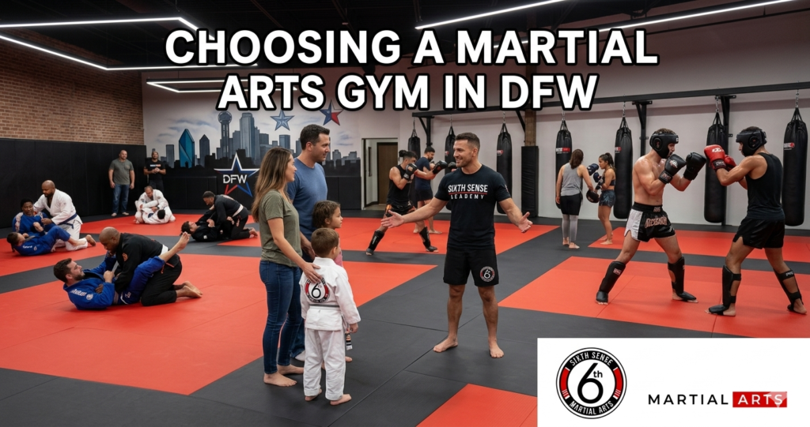
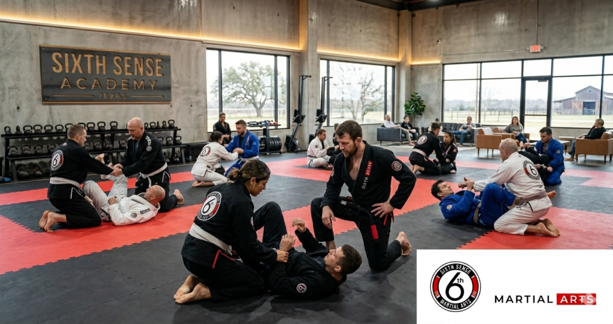
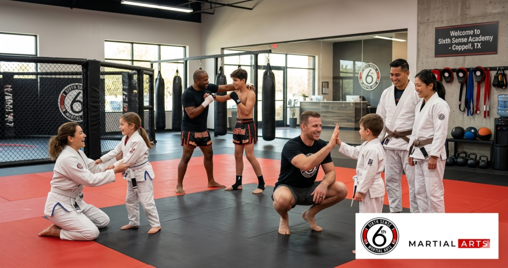

Who Should You Listen to About Choosing a Martial Arts Gym in DFW

Choosing a Martial Arts Gym in DFW isn’t as simple as searching “martial arts near me” and picking the one with the best photos. The dfw area has hundreds of options. Dojos and mma gyms and boxing gyms and bjj academies and kickboxing studios and everything in between. And most people picking one for the first time or for their kids are working off the wrong criteria entirely. This guide is written by someone who’s been on the mat for over a decade training kids and adults in brazilian jiu-jitsu and self-defense and has seen what separates a gym that actually develops people from one that just takes their money.
Sixth Sense Martial Arts at 817 S MacArthur Blvd #100 in Coppell TX is where this perspective comes from. And by the end of this you’ll know exactly what to look for in any martial arts school dfw texas and why the right choice is probably closer than you think.
Why Most People in DFW Pick the Wrong Martial Arts Gym
Here’s the thing. Most people searching for a bjj gym dallas fort worth or a top mma gyms dfw list start with the wrong question. They ask “which gym is cheapest” or “which one is closest to downtown dallas” instead of asking “which one will actually make me better.” Those aren’t the same question and the answers point in very different directions.
The dfw area has places like mohler mma and dfw combat co and believe martial arts that come up in searches regularly. Some of them are solid. Some are better for specific goals than others. But what nobody tells you when you’re starting out is that the gym’s reputation matters less than the specific instructor you’ll be working with three times a week for the next year.
Plain and simple. The coach is everything.
The Mistake of Choosing Based on Location and Price
A lot of families look at gyms in irving or addison or plano or grapevine and pick the one that’s most convenient to their drive home. That makes sense on paper. But convenience doesn’t teach you jiu-jitsu techniques or effective self-defense or how to handle an attacker who’s bigger than you. A world-class instructor 20 minutes away will develop your child faster and more safely than a mediocre one around the corner.
Price works the same way. Budget gyms tend to have high staff turnover and crowded classes and inconsistent instruction. The mat space at a cheaper facility might look fine in photos but what happens on it three months in is a different story entirely.
Not Understanding the Difference Between Disciplines
Choosing a Martial Arts Gym in DFW is genuinely confusing if you’ve never trained before. You’ve got traditional martial arts like karate and wrestling and krav maga on one end and combat sports like muay thai and brazilian jiu-jitsu and mixed martial arts on the other. Then there’s boxing and fitness classes that call themselves martial arts classes but are really just cardio with gloves.
Here’s what actually matters for most people. If your goal is effective self-defense then bjj and muay thai are where the evidence points. Brazilian jiu-jitsu is the art for self-defense that works when the fight goes to the ground which is most real situations. Muay thai covers the stand-up range with strikes that generate real power from the hips and the core. Combined they form the foundation of mma and the reason most ufc fighters base their game on one or both.
Karate has its place and traditional martial arts build discipline and physical strength and problem-solving in real ways. But if someone tells you their kid is getting effective self-defense techniques from a karate class with no sparring sessions you’re probably looking at a mcdojo. That’s the honest answer.
Falling for the Belt Factory Problem
Some martial arts studios are in the business of selling belt promotions. Kids move from white to yellow to orange every few months regardless of actual skill because it keeps parents engaged and retention high. The learning environment feels positive but there’s no real progress underneath the patches and the ceremonies.
The way to spot this before joining is to ask one question: do students spar? Controlled sparring sessions are how real skill develops. Any bjj academy worth its name has live rolling. Any muay thai gym worth attending has controlled pad work and eventually sparring. If the answer is no or “not until they’re advanced” run the other way.
This matters especially for kids jiu-jitsu programs because parents often can’t tell the difference between a class that’s building real skill and one that’s just keeping kids entertained until it’s time to sell the next belt.
What to Actually Look for in a Martial Arts School DFW Texas

The Instructor’s Credentials and Real Experience
A chief instructor at a legitimate bjj academy should have a verifiable black belt lineage. Not just a certificate on the wall. Ask where they trained and under whom and whether they’ve competed or used their training in a real context. For mma gyms the same applies to the striking coaches. Muay thai instruction from someone who’s actually trained in authentic thai methods is different from someone who learned from YouTube and a certification weekend.
The best bjj academy dallas isn’t necessarily the most famous one. It’s the one where the chief instructor is actually on the mat with you every session giving real feedback on your jiu-jitsu techniques and watching how your movement is developing over time.
Curriculum Structure Across Every Level
A gym with no curriculum is just a place to roll. Real martial arts training needs structure. Beginner through intermediate through advanced with clear benchmarks and a path that tells a new student what they’re working toward and how they’ll get there. This is what separates the top mma gyms dfw from the ones that just run open mat and call it a program.
For kids and adults both the curriculum should be age-appropriate and tailor to different experience levels and fitness goals within the same class. A 10-year-old doing kids jiu-jitsu shouldn’t be running the same session as a 35-year-old adult beginner. And a competitive fighter prepping for the octagon shouldn’t be stuck in a fundamentals class that doesn’t push them.
Gym Culture and the Learning Environment
This one you can only evaluate in person. Watch a class before signing anything. Look at how the instructor interacts with students when they make mistakes. Is the correction encouraging or dismissive? Are new students welcomed or ignored? Does the friendly atmosphere feel genuine or performed?
A good martial arts studio in dallas or coppell or anywhere else should feel like a place you want to come back to. The mat should be clean. The mat space should be adequate for the class size. And the energy in the room should feel like people are there because they want to be there not because they prepaid and can’t cancel.
Martial Arts Gym vs Boxing Gym DFW – What’s the Real Difference
This comes up constantly in mma gym review dfw searches and the answer isn’t as obvious as it sounds. A boxing gym is focused on boxing. Punching technique footwork head movement sparring sessions in the boxing range. That’s a legitimate and valuable thing to train. But it doesn’t cover grappling and it doesn’t cover the ground which is where most fights end up.
A martial arts gym that covers both striking and grappling gives you a range of classes that a pure boxing and fitness gym simply can’t. That’s the difference between a place that builds combat sports athletes and a place that builds fit people who know how to throw a punch.
| Feature | Boxing Gym DFW | BJJ Academy Dallas | MMA Gym DFW | Sixth Sense Martial Arts |
|---|---|---|---|---|
| Striking Training | Yes | Limited | Yes | Yes via Muay Thai |
| Grappling and BJJ | No | Yes | Yes | Yes |
| Kids and Adults Programs | Rarely | Sometimes | Sometimes | Yes ages 4 to adult |
| Structured Curriculum | Varies | Usually | Varies | Yes |
| Free Trial Available | Rarely | Sometimes | Sometimes | Yes |
| Personalized Coaching | Varies | Varies | Varies | Yes small class sizes |
| Self-Defense Focus | Partial | Yes | Yes | Yes |
The Free Trial Question
Any serious bjj gym dallas fort worth or mma gym dfw should let you train before asking for a membership commitment. A free trial isn’t just a marketing tool. It’s the only real way to evaluate whether the instruction style and the atmosphere and the class structure actually match what you need. If a gym won’t let you try before signing a contract that’s a red flag worth taking seriously.
How Sixth Sense Martial Arts in Coppell Answers Every One of These Criteria
Coach Mattheus Galvao and the Sixth Sense Method
Coach Mattheus Galvao is a verified black belt whose instruction is built around the Sixth Sense Method. That’s not a marketing phrase. It’s a real framework for developing martial artists at every level from complete beginners through competitive fighters. Every student at Sixth Sense gets personalized attention in small classes where the coach actually knows your name and your technical weaknesses and your goals.
That’s a different experience from training at a large martial arts studio in dallas where you might get three corrections in a 90-minute class if you’re lucky.
Complete Disciplines Under One Roof
Sixth Sense covers brazilian jiu-jitsu and muay thai and kickboxing under one program. That means a student who starts with bjj can add striking training without switching gyms and a student who starts with muay thai can add grappling when they’re ready. For people searching for mixed martial arts training in the dfw area this is the setup that actually builds complete fighters and self-defense practitioners rather than specialists in a single range.
The Adult BJJ Classes program covers the full spectrum from fundamental positions through live rolling and belt progression. The Adult Muay Thai Classes program covers authentic striking from stance through combination work and sparring. And the Kids BJJ Classes and Teen BJJ Classes programs are built specifically for younger age groups with instruction that’s appropriate for their development stage not just scaled-down adult classes.
The Coppell vs Dallas Martial Arts Question
A lot of people searching for the best martial arts gym dfw assume they need to go to downtown dallas or irving to find quality instruction. The coppell vs dallas martial arts comparison actually favors Coppell for most families in the Valley Ranch area. Less traffic. More accessible parking. A tighter community where the coaching staff actually knows the families by name.
The best bjj academy dallas doesn’t have to be inside the dallas city limits to deliver world-class instruction. Geography doesn’t make a coach better. The quality of the instruction and the structure of the program and the culture of the gym are what matter and those things exist at Sixth Sense regardless of what the GPS address says.
How to Evaluate and Choose Your Gym – Step by Step
This is the process that actually works for finding the right martial arts school dfw texas for you or your kids.
- Write down your actual goal before searching. Self-defense and fitness and competition prep are three different goals that point to different programs.
- Search for top mma gyms dfw and best bjj academy dallas and read actual student reviews not just star ratings.
- Check the chief instructor’s credentials specifically. Look for verifiable lineage and real competition or coaching experience.
- Visit the gym in person before making any decision. Watch a class. Watch how the coach interacts with new students.
- Look at the mat space and the cleanliness of the facility. A dirty gym with poor mat maintenance is a gym that doesn’t take safety seriously.
- Ask about class size. Anything over 20 students per instructor is going to limit the personalized attention you receive.
- Ask what the curriculum looks like for your specific age group and experience level.
- Claim the free trial. Train in at least one class before deciding anything.
- Talk to a current student after class not just the front desk staff.
- Enroll in the gym where the coach knew your name by the end of your first session.
The Data Behind Why Gym Quality Matters More Than People Realize
The difference between good and mediocre instruction shows up in numbers pretty clearly. Students in structured martial arts programs with clear belt progression stay enrolled on average three times longer than students in gyms without a defined curriculum. That means more skill development and better fitness outcomes and a real return on the time and money invested.
Confidence outcomes are consistent across studies. Students who train martial arts in a real structured program report a 65 percent average increase in self-confidence after six months. For kids that number is even higher and the behavioral effects show up at school and at home and in how they handle social conflict.
For self-defense specifically bjj has been consistently ranked among the top three most effective martial arts for real-world situations by combat sports researchers and practitioners including experts in law enforcement and military contexts. The reason is simple. It works when the fight goes to the ground and it works against a larger and stronger attacker because it’s built on leverage and technique rather than physical strength.
Bruce lee famously said that the best martial art is the one that works in a real fight. That quote gets repeated a lot but the substance behind it is real. Muay thai and bjj and the mma combination of both are what the evidence actually supports for effective self-defense in 2026.
Common Mistakes DFW Families Make When Choosing a Martial Arts Gym
The biggest one is signing a long-term contract before doing a free trial. No legitimate best martial arts gym dfw should require a commitment before letting you train. Period.
Choosing based on which gym has the best social media presence is another one that comes up constantly. A gym with great Instagram content might have a great marketing team. That doesn’t tell you anything about whether the instructor can actually teach jiu-jitsu techniques or whether the sparring culture is safe for new students.
Letting kids attend one class and quit because it was hard is something a lot of parents struggle with. Martial arts training is supposed to be challenging. The obstacle of the first few classes is exactly where the confidence-building happens. Pulling kids out the first time it gets uncomfortable removes them right before the progress starts showing up.
Picking a gym that only serves one age group is also a mistake if you’re thinking long-term. A martial arts program that serves kids and adults and every level under one roof creates a family culture that keeps people training for years instead of months.
Why Sixth Sense Is the Best Martial Arts Gym DFW Families Keep Coming Back To

Small class sizes mean every student at Sixth Sense gets real instruction and real correction every session. The coach knows where you’re struggling and adjusts the instruction to match your development. That’s not something you get at a large mma gym with rotating staff and 40 people per class.
The program covers every level from kids jiu-jitsu for ages 4 and up through adult bjj and muay thai and competition prep. Families can train together. Beginners and intermediate students and experienced martial artists all find a path here that makes sense for their goals.
The welcoming environment and friendly atmosphere aren’t accidental. They’re built into how the gym operates from the first day a new student walks in through their years of development as a martial artist. And the free trial means there’s no reason not to come in and see it for yourself.
The Martial Arts Near Me and MMA Gyms Near Me and BJJ Classes Near Me pages on the site have more on how to find and evaluate options in the dfw area. And the Brazilian Jiu-Jitsu Near Me and Martial Arts Gyms Near Me blog posts go deeper on specific criteria for evaluating bjj academies and mma programs specifically.
What DFW Students Say After Choosing Sixth Sense Over Other Options
A dad from Irving spent two months researching the best bjj academy dallas options and visited four gyms before landing at Sixth Sense. He said the difference was obvious in the first class. The coach corrected his posture four times in 45 minutes. At the previous gym he’d trained for three weeks and nobody had touched his technique once.
An adult beginner from the addison area came in after reading an mma gym review dfw comparison that mentioned Sixth Sense alongside mohler mma and dfw combat co. She said she chose Sixth Sense because the free trial was available without a credit card required and the class she attended had eight people in it. She’s been training for seven months now and has earned her first two stripes.
A mom from plano who was comparing coppell vs dallas martial arts options drove past three gyms to get to Sixth Sense after watching a kids jiu-jitsu class on their social media. She said the moment the coach got down on the mat to demonstrate at her son’s eye level she knew this was different from the karate school they’d tried the year before.
The Right Martial Arts Gym in DFW Is Worth the Search
If you’ve been trying to figure out how to choose martial arts gym dfw then you’ve probably been through a few tabs and a few reviews and still felt unsure. That’s normal. The dfw area has a lot of options and most of them look similar from the outside.
The difference shows up on the mat. In the quality of the instruction. In whether the coach knows your name by the end of the first class. In whether the curriculum is real and the belt progression means something and the sparring culture is safe enough for beginners to develop without getting hurt.
Sixth Sense Martial Arts in Coppell TX is built around all of those things. The free trial exists so you don’t have to take anyone’s word for it. Come in. Train once. See what a gym that actually develops martial artists feels like from the inside.
Call: (469) 972-7800 Email: info@sixthsensemma.com Visit: 817 S MacArthur Blvd #100 Coppell TX 75019 Free Trial: Claim Your Spot
Explore More:
- Adult BJJ Classes
- Adult Muay Thai Classes
- Kids BJJ Classes
- Teen BJJ Classes
- Martial Arts Near Me
- MMA Gyms Near Me
- BJJ Classes Near Me
- Martial Arts Gyms Near Me
Follow Sixth Sense on Instagram: https://www.instagram.com/sixthsensemma
FAQ’s
A boxing gym focuses on punching technique footwork and boxing-specific sparring sessions. A martial arts gym that covers bjj and muay thai gives you a range of classes across multiple disciplines and prepares you for a wider range of self-defense situations. For complete development in combat sports the martial arts gym wins consistently.
Ask about the chief instructor’s lineage and rank. A legitimate bjj academy will have a verifiable black belt with a real competition or coaching history. If they can’t tell you who promoted them or where they trained treat that as a red flag.
Age-appropriate curriculum. Instructors who’ve worked with that age group before. Controlled drilling that builds real technique not just games. And a culture where the coach knows each kid’s name and development stage. The best kids jiu-jitsu program at any gym in the dfw area should look different from the adult class not just shorter.
Verified instructor lineage. Structured curriculum across every level. Small class sizes with personalized coaching. Live rolling in a safe controlled environment. Real belt progression based on skill not attendance. And a learning environment where new students feel genuinely welcomed not just tolerated.
Look for reviews that talk about specific instructors and specific classes rather than general praise. Reviews that mention personalized attention and curriculum structure and how long the reviewer has been training are more reliable than five-star ratings with one sentence. Negative reviews that mention rotating staff or lack of instruction are worth taking seriously.
Yes for most families in the Valley Ranch Irving and Coppell corridor. The coppell vs dallas martial arts comparison comes down to instruction quality not location. Sixth Sense delivers world-class instruction in a less congested location with better access and a stronger community feel than most downtown dallas options.
Ask them to show you the beginner program outline. Ask what a student is expected to know before moving to the next level. Ask how belt promotions are evaluated. If the answers are vague or they say it’s based on attendance you’re looking at a gym without a real curriculum.
The coach. Always. A skilled coach in any discipline will develop you faster and more safely than a mediocre coach in the style you thought you wanted. Choosing martial arts style dfw matters less than finding the right person to teach you that style.
No sparring in the program at all. Belt promotions that happen too quickly for the skill level displayed. Crowded classes with minimal instructor correction. Dirty mat space. Contracts required before a free trial is offered. Staff who can’t clearly explain the curriculum or the instructor’s credentials.
Train with us in Coppell
The first class is free. Shorts, a t-shirt and a water bottle. We lend the rest.
Book a free class